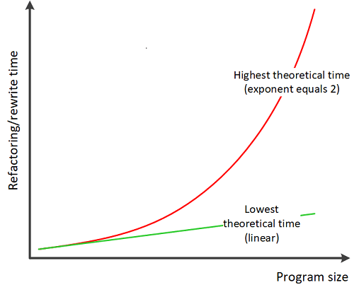

An Exercise in Estimating Refactoring Time
Introduction
This tip describes an exercise in finding the formula able to estimate the time required to refactor code based on the number of lines of original, pre-refactored code. The result is very rough and subjective, as very little data has been gathered and shall not be treated as definite.
Studying the Classics
Fred Brooks in his “The Mythical Man-Month"
ponders upon how much effort it takes to develop a computer program. He writes
that that “numbers, although not for strictly comparable problems, suggest
that effort goes as a power of size even when no communication is involved except
that of a [single] man with his [own] memories. Results reported from a study
done by Nanus and Farr at System Development Corporation […] show an exponent of 1.5; that is:
effort = (constant) * (number of instructions)1.5 “.
Since effort is roughly equivalent to a time spend by programmer developing
the program, the formula for a single developer can be equivalently expressed as:
development time = (constant) * (number of instructions)1.5.
Development vs Refactoring
The question is a follows: “Is time of refactoring performed by single developer governed by a similar formula?”, and if the answer is “Yes”, then what is the approximate value of “constant”?
The time required to refactor codebase comprising n lines of code needs to be bound by time = constant * n function from the bottom and time = constant * n2 function from the top. The linear function implies that a change to a single line of code does not require a change to any other line of code. This is requires each line of code to be totally independent from any other line of code, which excludes custom function calls and use of variables. This never happens in practice. The quadratic function on the other hand implies that a change to single line of code requires changes in all other lines of code. Such situation also never happens in practice. This means that the function needs to take the form of time = constant * nx where 1 < x < 2. This means that the real function must lie above green and below red line presented on Figure 1, which means that it may match the formula governing development time.

The Three Numbers
Finding the power curve function requires at least three data points. In order to obtain these data, I refactored the three programs (consisting of pure spaghetti code) available to me. The table below characterizes these programs.
| Program description | Size in KLOC (calculated with cloc) | Refactored into patterns | Refactoring time in hours |
| A web frontend written in PHP. Reads data from MySQL database (populated by background service) and presents it to user. Contains action button to delete record from database. | 0.3 |
|
5 |
| Background service written in Java. Retrieves data from Monit, transforms it and publishes through ZeroMQ. | 0.75 |
|
28 |
| Background service written in Java. Reads data from SQLite database using received geographic location (geographic data from http://www.naturalearthdata.com) and publishes it through ZeroMQ. | 1.8 |
|
88 |
All refactoring kept the programing language of original program. Refactoring used method described in the book "Working Effectively with Legacy Code" (which I highly recommend) which can be summarized as:
- Refactor the legacy code just enough to put it under test harness (isolate concurrency, isolate networking, parametrize configuration and database location)
- Capture the existing behavior of code with tests (use code coverage tool for help)
- Refactor the code under tests (and tests if code interfaces change)
In order to achieve the first step, I used the following techniques described in the book:
- Exposure of public constructors + dependency injection
- Interface extraction
- Reference encapsulation (accessing fields through
protectedmethods) - Parametrization through constructor
- Parametrization through
publicfields - Sub-classing and overriding
Results
Using the three data points, I use Excel spreadsheet to estimate the
formula to calculate refactoring time as:
refactoring time in hours = 40*KLOC1.3.
Additionally, putting the original code under test harness took consistently about 20% of total refactoring time.
The obtained result is very rough and highly subjective. The main deficiency of the method is that there was not definite stop condition (I stopped refactoring based of subjective feeling that the code is good enough) which makes the recorded refactoring times imprecise. Based on these results, I suspect that the “constant” value could generally be within range of 50 +/-20 and the exponent within range of 1.5 +/- 0.2.